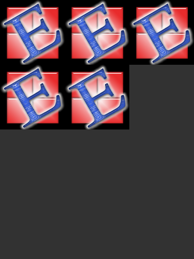

Pixmap¶
Pixmaps (“pixel maps”) are objects at the heart of MuPDF’s rendering capabilities. They represent plane rectangular sets of pixels. Each pixel is described by a number of bytes (“components”) plus an alpha (transparency) byte.
In PyMuPDF, there exist several ways to create a pixmap:
- create a pixmap from a document page (via methods
Page.getPixmap()orDocument.getPagePixmap()) - create an empty pixmap based on Colorspace and IRect information
- create a pixmap from a file
- create a pixmap from an in-memory image (bytearray)
- create a pixmap from a memory area containing plain pixels
Note
For supported image types using the file or in-memory constructors, see section below.
Have a look at the example section to see some pixmap usage “at work”.
| Method / Attribute | Short Description |
|---|---|
Pixmap.clearWith() |
clears (parts of) a pixmap |
Pixmap.tintWith() |
tints a pixmap with a color |
Pixmap.gammaWith() |
applies a gamma factor to the pixmap |
Pixmap.writePNG() |
saves a pixmap as a PNG file |
Pixmap.getPNGData() |
returns a PNG as a memory area |
Pixmap.writeImage() |
saves a pixmap in a variety of image formats |
Pixmap.copyPixmap() |
copy parts of another pixmap |
Pixmap.getSize() |
returns the pixmap’s total length |
Pixmap.getColorspace() |
returns the Colorspace used |
Pixmap.getIRect() |
returns the IRect used |
Pixmap.invertIRect() |
invert the pixels of a given area |
Pixmap.samplesRGB() |
RGB pixel data without alpha bytes |
Pixmap.samplesAlpha() |
returns the alpha bytes |
Pixmap.samples |
the components data for all pixels |
Pixmap.height |
height of the region in pixels |
Pixmap.width |
width of the region in pixels |
Pixmap.x |
X-coordinate of top-left corner of pixmap |
Pixmap.y |
Y-coordinate of top-left corner of pixmap |
Pixmap.n |
number of bytes per pixel |
Pixmap.xres |
resolution in X-direction |
Pixmap.yres |
resolution in Y-direction |
Pixmap.interpolate |
interpolation method indicator |
Class API
-
class
Pixmap¶ -
__init__(self, colorspace, irect)¶ This constructor creates an empty pixmap of a size and an origin specified by the irect object. So for a
fitz.IRect(x0, y0, x1, y1),fitz.Point(x0, y0)designates the top left corner of the pixmap. Note that the image area is not initialized and will contain crap data.Parameters: - colorspace (Colorspace) – The colorspace of the pixmap.
- irect (IRect) – Specifies the pixmap’s area and its location.
-
__init__(self, filename) This constructor creates a non-empty pixmap from the image contained in file
filename.Parameters: filename (string) – Path / name of the file. The origin of the resulting pixmap is (0,0).
-
__init__(self, img) This constructor creates a non-empty pixmap from
img, which is assumed to contain a supported image as a bytearray.Parameters: img (bytearray) – Data containing a complete, valid image in the specified format. E.g. this may have been obtained from a statement like img = bytearray(open('somepic.png', 'rb').read()). The origin of the resulting pixmap is (0,0).
-
__init__(self, colorspace, width, height, samples) This constructor creates a non-empty pixmap from
samples, which is assumed to contain an image in “plain pixel” format. This means that each pixel is represented by n bytes (as controlled by thecolorspaceparameter). The origin of the resulting pixmap is (0,0). This method is useful when raw image data are provided by some other program, or to create a copy of another pixmap, or - see examples below.Parameters: - colorspace (Colorspace) – Colorspace of the image. This crucial parameter controls the interpretation of the
samplesarea: forCS_GRAY,CS_RGBandCS_CMYK, 2, 4 or 5 bytes in samples will be assumed to define one pixel, respectively. For this number n, the following must evaluate toTrue:n * width * height == len(samples). - width (int) – Width of the image
- height (int) – Height of the image
- samples (bytearray) – A bytearray containing consecutive bytes describing all pixels of the image.
- colorspace (Colorspace) – Colorspace of the image. This crucial parameter controls the interpretation of the
-
clearWith(value[, irect])¶ Clears an area specified by the IRect
irectwithin a pixmap. To clear the whole pixmap omitirect.Parameters: - value (int) – Values from 0 to 255 are valid. Each color byte of each pixel will be set to this value, while alpha will always be set to 255 (non-transparent). Default is 0 (black).
- irect (IRect) – An IRect object specifying the area to be cleared.
-
tintWith(red, green, blue)¶ Colorizes (tints) a pixmap with a color provided as a value triple (red, green, blue). Use this method only for
CS_GRAYorCS_RGBcolorspaces. ATypeErrorexception will otherwise be raised.If the colorspace is
CS_GRAY,(red + green + blue)/3will be taken as the tinting value.Parameters: - red (int) – The
redcomponent. Values from 0 to 255 are valid. - green (int) – The
greencomponent. Values from 0 to 255 are valid. - blue (int) – The
bluecomponent. Values from 0 to 255 are valid.
- red (int) – The
-
gammaWith(gamma)¶ Applies a gamma factor to a pixmap, i.e. lightens or darkens it.
Parameters: gamma (float) – gamma = 1.0does nothing,gamma < 1.0lightens,gamma > 1.0darkens the image.
-
invertIRect(irect)¶ Invert the color of all pixels in an area specified by IRect
irect. To invert everything, usegetIRect()or omit this parameter.Parameters: irect (IRect) – The area to be inverted.
-
copyPixmap(source, irect)¶ Copies the IRect part of the
sourcepixmap into the corresponding area of this one. The two pixmaps may have different dimensions and different colorspaces (provided each is eitherCS_GRAYorCS_RGB). The copy mechanism automatically adjusts to any discrepancies between source and target pixmap like so:If copying from
CS_GRAYtoCS_RGB, the source gray-shade value will be put into each of the three rgb component bytes. If the other way round, (r + g + b) / 3 will be taken as the gray-shade value of the target.Between the specified
irectand the target pixmap’s IRect, an “intersection” rectangle is first being calculated. Then the corresponding data of this intersection are being copied. If the intersection is empty, nothing will happen.If you want your
sourcepixmap image to land at a specific position of the target, modify itsxandyattributes accordingly before copying. See the example below for how this works.Parameters:
-
getSize()¶ Returns the total length of the pixmap. This will generally equal
len(pix.samples) + 52. The following will evaluate toTrue:len(pixmap) == pixmap.getSize().Return type: int
-
getColorspace()¶ Returns the colorspace of the pixmap.
Return type: Colorspace
-
writePNG(filename, savealpha=False)¶ Saves a pixmap as a PNG file. Please note that only grayscale and RGB colorspaces can be saved in PNG format (this is not a PyMuPDF restriction).
Parameters: - filename (string) – The filename to save as (the extension
pngmust be specified). - savealpha (bool) – Also save the alpha channel (
True) or not (False- the default).
- filename (string) – The filename to save as (the extension
-
getPNGData(savealpha=False)¶ Returns the pixmap data as an image area (bytearray) in PNG format.
Parameters: savealpha (bool) – Also save the alpha channel ( True) or not (False- the default).Return type: bytearray
-
writeImage(filename, output="png", savealpha=False)¶ Saves a pixmap as an image file. This method is an extension to
writePNG(). Depending on the output chosen, some or all colorspaces are supported and different file extensions can be chosen. Please see the table below.Parameters: - filename (string) – The filename to save to. Depending on the chosen output format, possible file extensions are
.pam,.pbm,.pgm,ppm,.pnm,.pngand.tga. - output (string) – The requested image format. The default is
pngfor which this function is equivalent towritePNG(). Other possible values arepam,pnmandtga. - savealpha (bool) – Save the alpha channel (
True) or not (False- the default).
- filename (string) – The filename to save to. Depending on the chosen output format, possible file extensions are
-
samplesRGB()¶ Returns the pixmap samples (see below) without alpha bytes (currently RGB only). This is a technical function: some dialog managers cannot deal with the RGBA format and either expect RGB data only, or eventually a separate alpha channel alongside.
Return type: bytearray
-
samplesAlpha()¶ Returns the alpha channel of the pixmap’s samples area (see below). This is a technical function: occasionally dialog managers cannot deal with the RGBA format and either expect RGB data only, or eventually a separate alpha channel alongside.
Return type: bytearray
-
samples¶ The color and transparency values for all pixels.
samplesis a memory area of sizewidth * height * nbytes. Each n bytes define one pixel. Each successive n bytes yield another pixel in scanline order. Subsequent scanlines follow each other with no padding. E.g. for an RGBA colorspace (i.e.n = 4) this means,samplesis a bytearray like..., R, G, B, A, ..., and the four byte values R, G, B, A define one pixel.This area can also be used by other graphics libraries like PIL (Python Imaging Library) to do additional processing like saving the pixmap in additional image formats. See example 3.
Return type: bytearray
-
width¶ The width of the region in pixels. For compatibility reasons,
wis also supported.Return type: int
-
height¶ The height of the region in pixels. For compatibility reasons,
his also supported.Return type: int
-
x¶ X-coordinate of top-left corner
Return type: int
-
y¶ Y-coordinate of top-left corner
Return type: int
-
n¶ Number of components per pixel. This number depends on (and identifies) the chosen colorspace:
CS_GRAY= 2,CS_RGB= 4,CS_CMYK= 5.Return type: int
-
xres¶ Horizontal resolution in dpi (dots per inch).
Return type: int
-
yres¶ Vertical resolution in dpi.
Return type: int
-
interpolate¶ An information-only boolean flag set to
Trueif the image will be drawn using “linear interpolation”. IfFalse“nearest neighbour sampling” will be used.Return type: bool
-
Supported Pixmap Construction Image Types¶
Support includes the following file types: BMP, JPEG, GIF, TIFF, JXR, and PNG.
Details on Saving Images with writeImage()¶
The following table shows possible combinations of file extensions, output formats and colorspaces of method writeImage().
Pixmap Example Code Snippets¶
Example 1
This shows how pixmaps can be used for purely graphical, non-PDF purposes. The script reads a PNG picture and creates a new PNG file which consist of 3 * 4 tiles of the original one:
import fitz
# read in picture image and create a pixmap of it
pix0 = fitz.Pixmap("editra.png")
# calculate target colorspace and pixmap dimensions and create it
tar_cs = pix0.getColorspace() # use colorspace of input
tar_width = pix0.width * 3 # 3 tiles per row
tar_height = pix0.height * 4 # 4 tiles per column
tar_irect = fitz.IRect(0, 0, tar_width, tar_height)
# create empty target pixmap
tar_pix = fitz.Pixmap(tar_cs, tar_irect)
# clear target with a very lively stone-gray (thanks and RIP, Loriot)
tar_pix.clearWith(90)
# now fill target with 3 * 4 tiles of input picture
for i in list(range(4)):
pix0.y = i * pix0.height # modify input's y coord
for j in list(range(3)):
pix0.x = j * pix0.width # modify input's x coord
tar_pix.copyPixmap(pix0, pix0.getIRect()) # copy input to new loc
# save intermediate image to show what is happening
fn = "target-" + str(i) + str(j) + ".png"
tar_pix.writePNG(fn)
This is the input picture editra.png (taken from the wxPython directory /tools/Editra/pixmaps):
Here is the output, showing some intermediate picture and the final result:

Example 2
This shows how to create a PNG file from a numpy array (several times faster than most other methods):
import numpy as np
import fitz
#==============================================================================
# create a fun-colored width * height PNG with fitz and numpy
#==============================================================================
height = 150
width = 100
bild=np.ndarray((height, width, 4), dtype=np.uint8)
for i in range(height):
for j in range(width):
# one pixel (some fun coloring)
bild[i, j] = [(i+j)%256, i%256, j%256, 255]
samples = bytearray(bild.tostring()) # get plain pixel data from numpy array
pix=fitz.Pixmap(fitz.Colorspace(fitz.CS_RGB), width, height, samples)
pix.writePNG("test.png")
Example 3
This shows how to interface with PIL / Pillow (the Python Imaging Library), thereby extending the reach of image files that can be processed:
import fitz
from PIL import Image
pix = fitz.Pixmap(...)
... # any code here
# create and save a PIL image
img = Image.frombytes("RGBA", [pix.width, pix.height], str(pix.samples))
img.save(filename, 'jpeg')
# an example for the opposite direction
# create a pixmap from any PIL-supported image file "some_image.xxx"
img = Image.open("some_image.xxx").convert("RGBA")
samples = bytearray(img.tobytes())
pix = fitz.Pixmap(fitz.csRGB, img.size[0], img.size[1], samples)